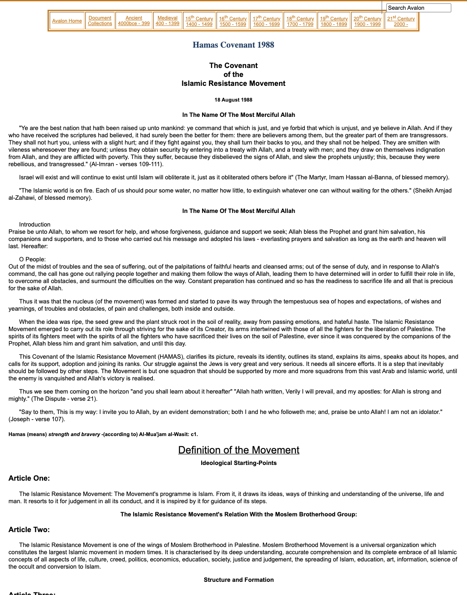

1:05:43 · 3 OPERE
Is anti-Semitism making a comeback starting from college campuses? A conversation with Chaim Noll.
Il filo del discorso
La conversazione fra Dr Divago e Chaim Noll si svolge nel contesto dell’attacco del 7 ottobre 2023 e della guerra successiva. Noll, collegato dal Negev, comincia dalla propria famiglia: tre nipoti sono nell’esercito e il loro servizio produce una preoccupazione continua. Il rumore degli aerei, che a un certo punto interrompe il dialogo, rende concreta questa vicinanza. Il tema dei campus occidentali viene così discusso da una prospettiva dichiaratamente personale e politica, distinta da una ricerca statistica sulle università. Dr Divago chiede perché l’odio antiebraico e alcune giustificazioni della violenza sembrino trovare spazio dopo l’attacco. Noll, che dichiara di conoscere meno la situazione americana, concentra la propria interpretazione sull’Europa e sulla sottovalutazione della militanza islamista. Presenta Scharia und Smartphone, raccolta di saggi e commenti maturati in circa vent’anni. Il libro e i riferimenti al Corano e alla carta di Hamas costituiscono il nucleo bibliografico del contributo. La scheda mantiene le tesi dell’autore attribuite e distingue testi, organizzazioni, comunità religiose e singole persone: la responsabilità di un gruppo armato non si estende a tutti i musulmani o palestinesi. Il discorso passa alle lettere degli studenti di Harvard, alle politiche contro l’odio, alle polemiche mediatiche e a un episodio narrato a Stanford. Qui la verifica delle fonti modifica alcuni assoluti. Harvard condannò esplicitamente gli attacchi di Hamas il10ottobre 2023; Stanford parlò di un istruttore esterno al corpo docente e di accertamenti in corso. L’iniziativa americana contro l’islamofobia apparteneva a una politica che aveva già prodotto una strategia contro l’antisemitismo. Il diritto alla critica religiosa e politica viene distinto dalle minacce e dalle attribuzioni collettive di caratteri negativi. La questione di Gaza occupa una parte importante del confronto. Noll denuncia il governo di Hamas e riconosce nello stesso tempo la sofferenza dei civili, che non considera automaticamente responsabili. Si domanda anche se l’obiettivo di eliminare l’organizzazione sia realizzabile. Le sue stime sui razzi e sui sistemi difensivi rimangono valutazioni del momento. Le note distinguono il ritiro israeliano del 2005 dalla questione giuridica del controllo effettivo e richiamano gli obblighi di protezione dei civili. Anche lo slogan From the river to the sea richiede l’esame del contesto, anziché una conclusione automatica sull’intenzione di chi lo usa. Nell’ultima parte emerge la differenza di tono fra i due interlocutori. Dr Divago, segnato anche dai commenti ricevuti sul canale, teme una continuità profonda del pregiudizio. Noll insiste sulla possibilità che gli eventi producano una presa di coscienza e un cambiamento educativo. La sua fiducia, anche religiosa, non nega il pericolo ma rende possibile continuare a vivere in Israele. Il dialogo si chiude senza sciogliere questa tensione fra memoria storica, vulnerabilità e speranza.
I libri nel discorso
Scharia und Smartphone. Texte zum zeitgenössischen Islam
Copertina della raccolta Scharia und Smartphone: Gerhard Hess Verlag · Uhingen · 2023 · ISBN 9783873367883
Copertina autentica del volume 2023 dal sito del suo editore, non copertina inventata, articolo omonimo o altra opera di Noll. Il volume raccoglie quaranta testi; il video non li identifica tutti come singole opere citate. L’esemplare mostrato non è stato verificato mediante ascolto o revisione umana del filmato.
Chaim Noll mostra e nomina il proprio Scharia und Smartphone e descrive la raccolta di saggi composti nel corso di vent’anni; verificato il volume Hess 2023 ISBN 9783873367883.
Passaggio 6:33 ↗ · Fonti e libro ↗
Corano
Copertina: BUR Classici, edizione aggiornata
Edizione con introduzione, traduzione e commento di Alessandro Bausani, a cura di Layla Mustapha Ammar. Anno della ristampa non dedotto dalla copertina; nessuna edizione attribuita al video.
Noll nomina il Corano nel discutere la letteratura religiosa islamica. il video non indica qui una sura o edizione univoca. La sua lettura polemica non è adottata come descrizione totale del testo o di tutti i fedeli.
Passaggio 22:17 ↗ · Fonti e libro ↗
Carta di Hamas del1988 (The Covenant of the Islamic Resistance Movement)
Identificazione probabile
Inizio del testo della carta 1988 nell’archivio Yale Avalon: Carta18agosto 1988 · traduzione inglese conservata da Yale Avalon
Schermata autentica dell’inizio del documento pubblicato da Yale, con titolo, data e testo. Non è un frontespizio PDF, un indice bibliografico o una copertina ricostruita. La pagina documenta criticamente un testo antisemita storico e non ne avalla contenuti o obiettivi; la versione esatta consultata dagli interlocutori non è accertata.
La carta di Hamas è richiamata per obiettivi e citazioni religiose, poi di nuovo nel racconto del video al campus. Corrispondenza probabile con la carta 1988 conservata da Yale: l’anno e gli articoli non sono pronunciati.
Passaggio 26:50 ↗ · Fonti e libro ↗